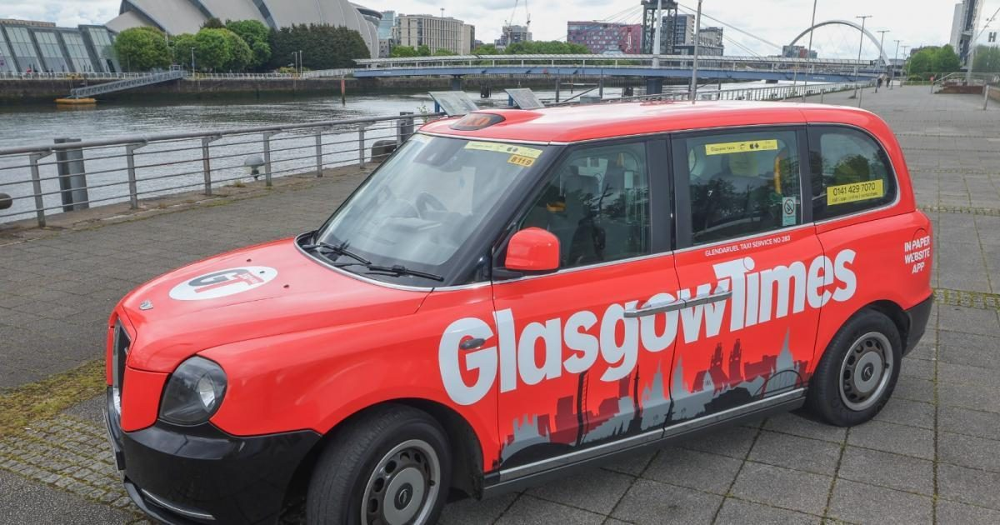
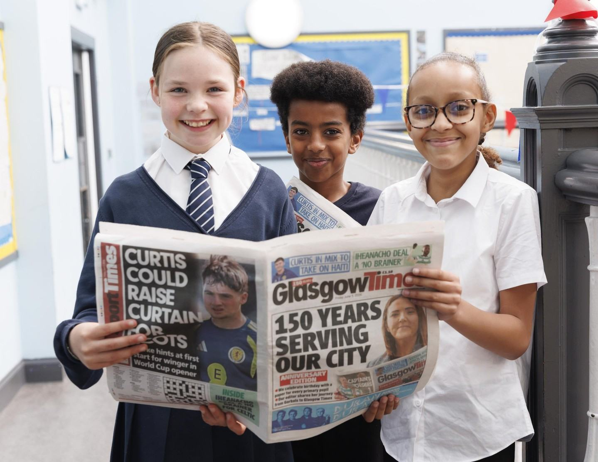
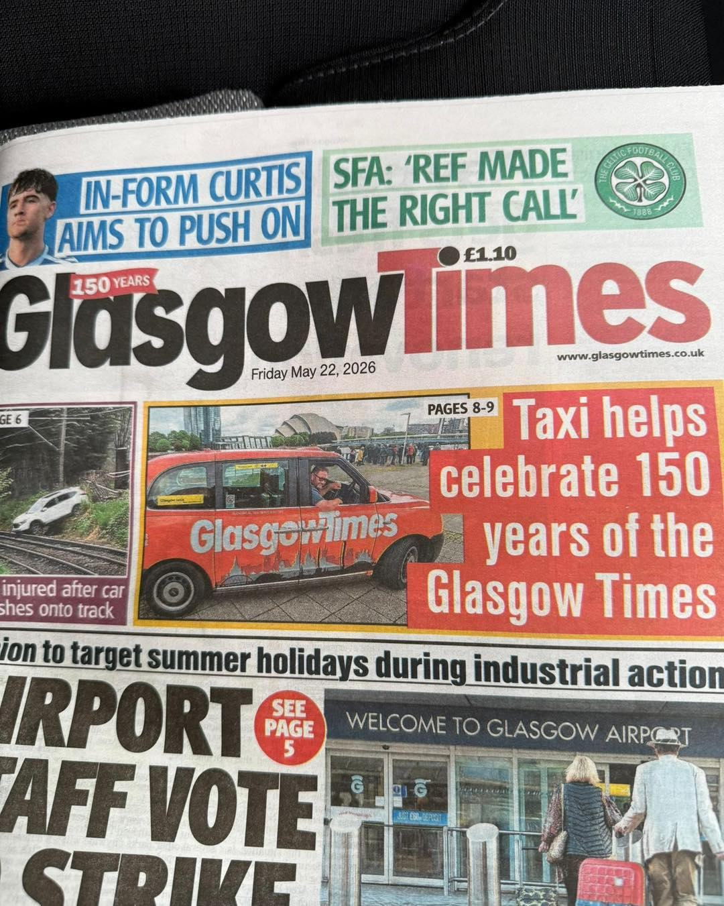
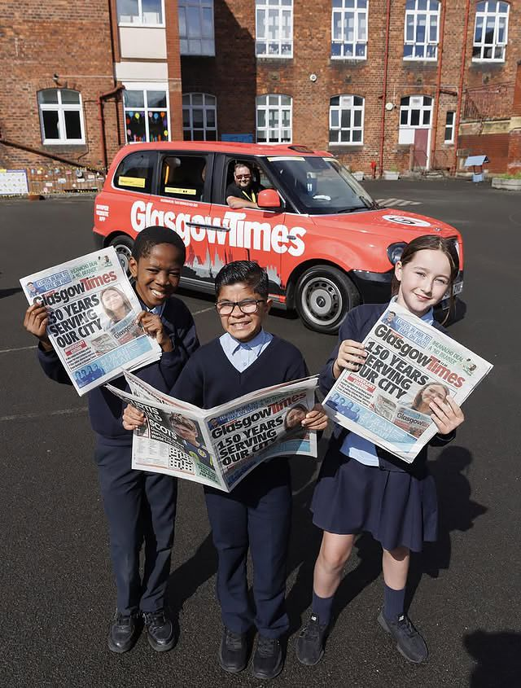
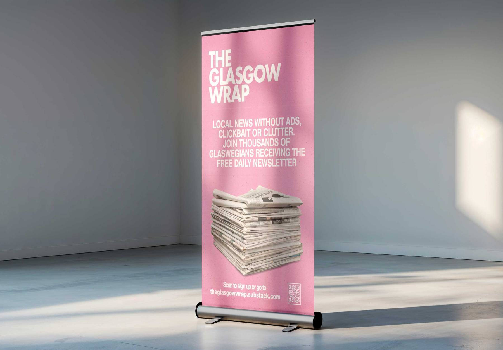

150 Years

Design and brand work across print, digital and out-of-home — marking 150 years of Glasgow's own paper.
About project
Glasgow Times marked its 150th anniversary in 2026 with a campaign spanning out-of-home, digital and print. The work covers a wrapped taxi touring the city, a roll-up banner for the paper's newsletter arm, competition creative for online display, and the front pages that carried the celebration home.


Project overview
CHALLENGE: Mark 150 years in a way that felt earned, not just decorative — something people would notice on the street, not just in print.
STRATEGY: Take the masthead physically into the city, then let the paper cover its own campaign as a genuine news story.


What I did
EXECUTION: A full taxi wrap, a roll-up banner for the newsletter arm, digital display creative and a dedicated front-page feature.
RESULTS: Earned press coverage on top of the paid campaign — the wrap became a front-page story in its own right.
Let's talk about your next
amazing project